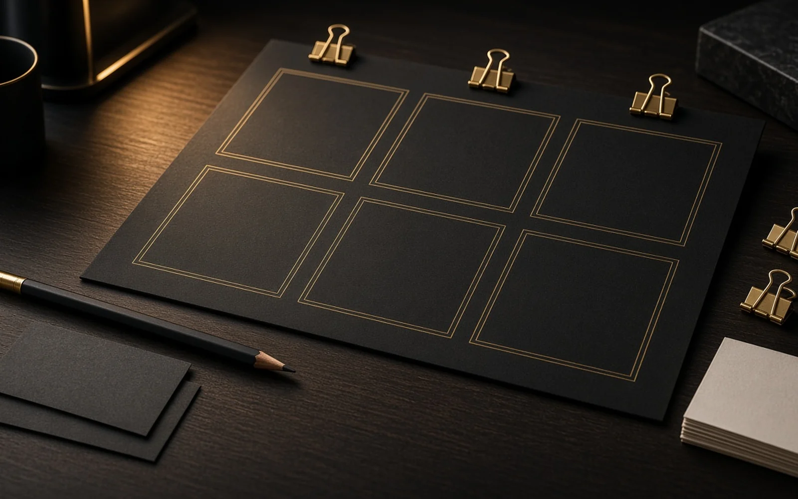

AI 项目
从自己真正遇到的问题出发，做成能重复使用的方法。有的已经在日常里使用，有的还在试验或计划中。
把平时点的高热量外卖折算成运动量，看要跑多远才能消耗完。
面向个人学习的网络与服务器搭建，方便更顺畅地使用海外 AI 服务。
请一个要求明确的 AI 老师，把「不会写代码」一点一点补上。

从选题到钩子、分镜和口播稿，先把一支短视频在纸上跑通。
试着让 AI 在自己的电脑上动手，而不是只待在网页对话框里。
想把健身教练从屏幕里拿出来，做成能随身带着的东西。